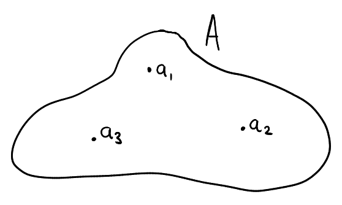

Part 1 - Introduction¶
In type theory there are two kinds of objects: terms and types. A term is something that is contained in a type and a type is something that contains terms. For instance, the following illustrates a type called A which contains three terms: a₁, a₂, a₃.

One may notice a heavy similarity to set theory but there are various key differences. In set theory, every object is a "set" and I like to think that these objects behave like a term and a type simultaneously, that is to say they can act as objects inside containers, whilst also being able to act as containers themselves.
The above shows a set \(A\) serving as a container (containing the element (set) \(a\)). At the same time, \(A\) serves as an object contained in the set \(\{A\}\).
In type theory there is a separation between objects that act like containers (types) and the contained objects (terms). I think of type theory as a 2-level system, that is to say, if A is a type then there is no "higher-level" object that can contain A since it is already the highest level object. Similarly, a term cannot act as a container for another object because it is the lowest level object.
This is a naive view of type theory. In truth, there is a cumulative hierarchy of universes, much like Von Neumann universes. We will adopt this naive view for now and completely switch gears at some point.
It is also important to note that a term has to always be associated to the type that it is contained in, that is to say, one cannot introduce a term a without reference to the type that it is contained in. The notation "a:A" is used to express that a term a is contained in a type A. Whilst in set theory it is acceptable (but perhaps not good practice) to mention the object \(1:=\{\varnothing\}\) without the context that \(1\in \mathbb{N}\)1, it is nonsense to speak of a term a without reference to the type that it is contained in. Whenever we introduce a term, we do so by writing a:A, forcing us to make reference to a type A which contains the term. If I write a on its own, this means that it should be clear from context what the type of A is.
In type theory, a term is also uniquely contained in one type, that is to say we cannot have both a:A and a:B unless A := B. One may then ask: if we think of \(\mathbb{N}\) and \(\mathbb{Z}\) as types then don't we have both 1:ℕ and 1:ℤ? The way type theory deals with this is to have different terms represent the multiplicative identity of \(\mathbb{N}\) and \(\mathbb{Z}\) (even if they have the same symbol)2. If we want to be ultra-precise we may use the symbols ℕ(1) and ℤ(1) to refer to these two terms, but this is really no issue, ideally there is always enough context to clear up any confusion.
Side Note:
At first glance this appears to pose some problems. For example if we have a function f:ℤ→ℤ (a mapping between terms of type ℤ to terms of type ℤ)3, it doesn't make sense (in type theory) to use 1:ℕ as an input for this function because of the type mismatch. This is an annoying feature, but can be fixed easily with coercions.
The basic idea is as follows: to express the idea (from set theory) that \(\mathbb{N}\subseteq \mathbb{Z}\) in terms of type theory, one can specify a function ι:ℕ→ℤ (called a coercion from ℕ to ℤ) such that the term 1:ℕ is mapped to the term 1:ℤ and so on. To view/treat a term of type ℕ as a term of type ℤ one just needs to apply the function ι:ℕ→ℤ to that term. We may not be able to use 1:ℕ as an input for f:ℤ→ℤ but an equivalent alternative is to use ι(1):ℤ as the input instead. Going the other way around (viewing terms of type ℤ as terms of type ℕ) is less straightforward and will be discussed later, as well as more details regarding coercions.
Before continuing let us write
A:Typeto specify thatAis a type. Notice that the colon ina:AandA:Typeare functionally different. That is, whileais thought of as contained inA, we don't think ofAas being contained an object calledType.
Another key idea in type theory is the equivalence between propositions and types (the proposition as types interpretation). For example, statements ranging from RH (Riemann's Hypothesis) to ∀n:ℕ,∃m:ℕ, m>n are all types, i.e, RH:Type and ∀n:ℕ,∃m:ℕ, m>n:Type, etc... But on the flip side this means that ℕ:Type can be viewed as a proposition, and it is not entirely clear what this means. I am not too confident with my ability to explain this topic, but here is a stackexchange post that goes into detail.
In some alternate approaches we can only interpret types with at most one term as propositions. This is known as the proposition as some types interpretation. We will actually switch to this interpretation later on for reasons to be explained later.
If A:Type is to be interpreted as a proposition, then what are its terms supposed to be? The terms of A are given by the proof(s) of A. In other words, A is true iff it is a nonempty type and false otherwise. This idea seems weird at first, but it will be explained more precisely at some later section. The point is that type theory gives us the ability to treat proofs and propositions as mathematical objects in the exact same way we treat numbers as mathematical objects, and it is this idea that makes type theory more suitable for theorem proving software than set theory or other alternatives.
That is it for a brief overview of type theory. In the next section we go over the process of creating / building a type.
-
In the same vein that it is acceptable to mention \(\varnothing\) without reference to some larger set it is a part of. ↩
-
Similar to how we use the same symbol \(+\) to denote addition between elements of \(\mathbb{R}\) and addition between elements of \(\mathbb{R}^2\) even though they count as two different operators. ↩
-
Precisely what a function is in terms of type theory will be discussed later, but right now the details don't matter. We all know how a function is supposed to work and this is no different in type theory than it is in set theory. ↩